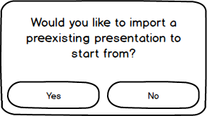
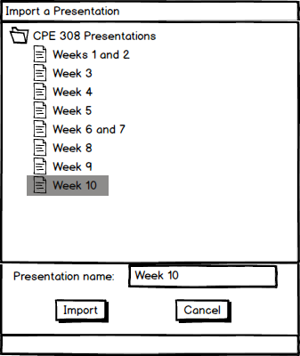

2.2.2. Importing a Presentation
After clicking on the 'New Lecture' button shown in the user interface overview, the presenter has two options. He or she can either start from scratch or import a preexisting presentation to make changes to.
Figure 1 shows the import prompt after clicking 'New Lecture'.

Figure 1: The import prompt.
The EClass displays an import prompt right away. The presenter chooses 'no' if he or she wants to create a brand new presentation. If the presenter chooses 'yes', then a new file selection window opens up.
Figure 2 shows the file selection window after clicking 'yes'.

Figure 2: The file selection window.
The presenter navigates through his or her folders and files to find the desired base presentation file. After finding the desired file, the presenter selects that file and can choose to 'Import' it or 'Cancel'. If the presenter selects 'Cancel', then nothing is imported. This results in the same blank presentation as the one that would be created by selecting 'no' at the import prompt. If the presenter selects 'Import', the EClass uses the selected file to populate the data and format for the presentation. The presenter then makes any desired adjustments using the tools described in the page for inserting basic presentation elements.
Prev: inserting-elements-overview
| Next: presentation-format-details-overview
| Up: preparing-a-presentation-overview
| Top: index